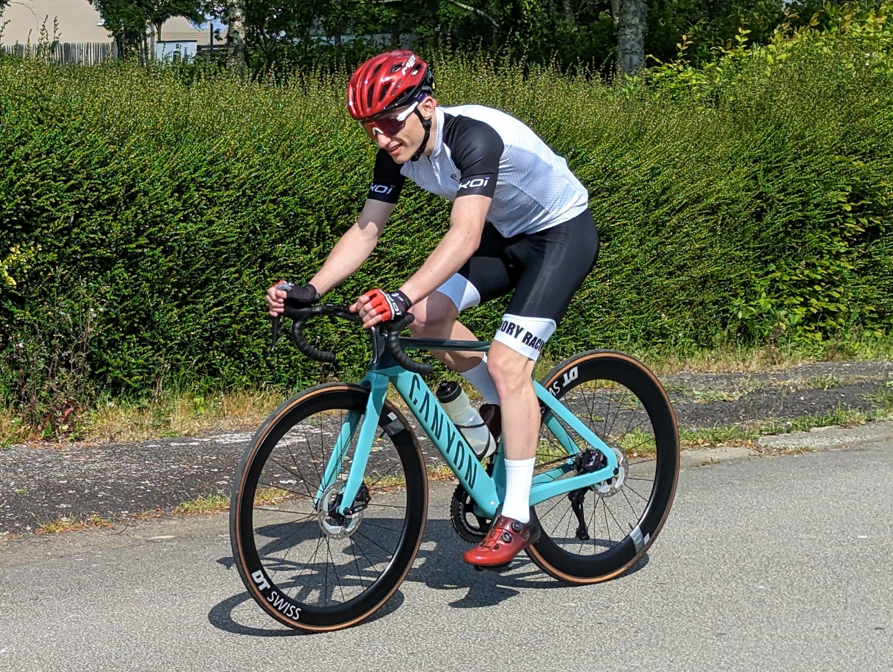

Within the tapestry of my vibrant existence, amidst the pursuit of intellectual enlightenment and the exhilaration of physical endeavors, there lies a tale of unwavering dedication and fortitude that has shaped the very core of my being. As I reflect upon the symphony of my accomplishments, I am humbled to recount the chapters of my life that bear witness to my relentless pursuit of excellence.
A Testament to Discipline and Perseverance: Journeying Through the Realm of Physical Prowess
In the realm of physical prowess, I stand as a testament to the power of discipline and perseverance. For a decade, the art of judo has been woven into the fabric of my existence, an embodiment of strength, technique, and unwavering resilience. With the coveted brown belt cinching my waist, I have stood on the sacred ground of countless dojos, engaging in the graceful dance of balance, agility, and mental acuity. Through each throw, each submission, and each victory, I have learned the art of perseverance, shaping my character and instilling within me an unwavering spirit that transcends the realms of mere physicality.
Embracing the Vertical Frontier: Conquering Fear and Exploring Boundless Possibilities
Yet, my hunger for adventure and a thirst for pushing beyond my comfort zones beckoned me to new heights. Thus, I embraced the vertical world, ascending the craggy cliffs with a heart unyielding to fear. Five years of climbing sculpted my spirit, teaching me not only to conquer physical obstacles but also to navigate the treacherous paths of risk and uncertainty. With each ascent, I found solace in the delicate balance between calculated strategy and audacious exploration. The vertical expanse became my canvas, as I etched my determination upon the rock face, transcending the limitations of gravity and embracing the boundless possibilities that lie beyond.
Triathlon: Unleashing the Resilience Within
Moreover, my pursuit of physical excellence knew no boundaries, as I embarked upon the challenging journey of the triathlon. Two years of rigorous training pushed the boundaries of my endurance, as I immersed myself in the triumvirate of swimming, cycling, and running. With each stroke, pedal, and stride, I discovered the reservoirs of resilience buried deep within. The triathlon became my crucible, forging not only my physical prowess but also honing my mental fortitude, preparing me to conquer the vast landscapes that lay before me.

Harmony of Body and Mind: Forging the Path to Conquer Challenges
With the tapestry of my athletic endeavors woven alongside the intricate threads of mathematical and scientific exploration, I stand as a testament to the harmonious balance between body and mind. The sum of my experiences, the ceaseless pursuit of knowledge, and the unwavering dedication to physical prowess have shaped me into a being poised to conquer the greatest of challenges that await.
From Academic Odyssey to Extraordinary: The Indomitable Fusion of Intellect and Athleticism
As I forge ahead on my grand odyssey towards academic excellence, I carry with me the indomitable spirit of a judoka, the audacity of a climber, and the endurance of a triathlete. Through the synergy of intellect and athleticism, I embody a resolute determination that transcends the ordinary and embraces the extraordinary.
With every step forward, fueled by the fire of passion and the unwavering belief in my capabilities, I march towards the horizon that promises not only triumph and accomplishment but also a life lived to its fullest potential. For within the realm of mathematics and physics, amidst the realms of physical prowess and athletic triumph, I am a symphony of unfathomable possibilities—a scholar, an athlete, and an unwavering dreamer, poised to leave an indelible mark upon the tapestry of human achievement.